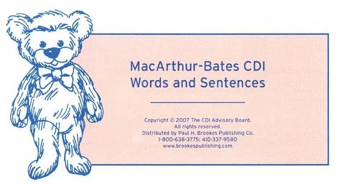
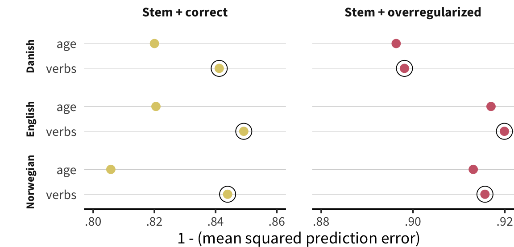
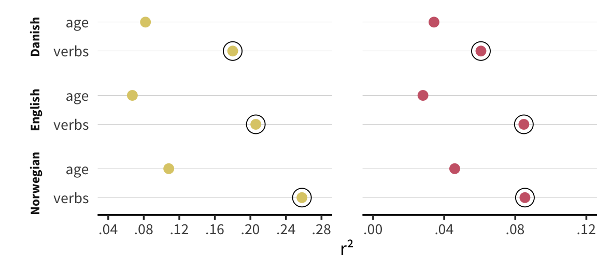
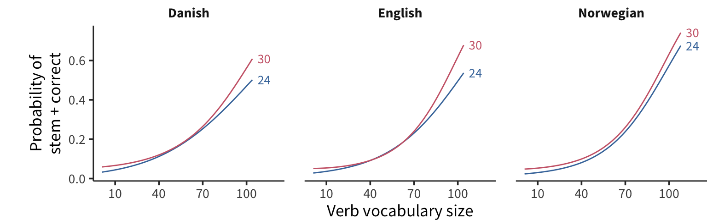
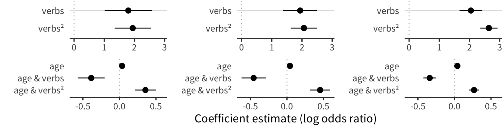
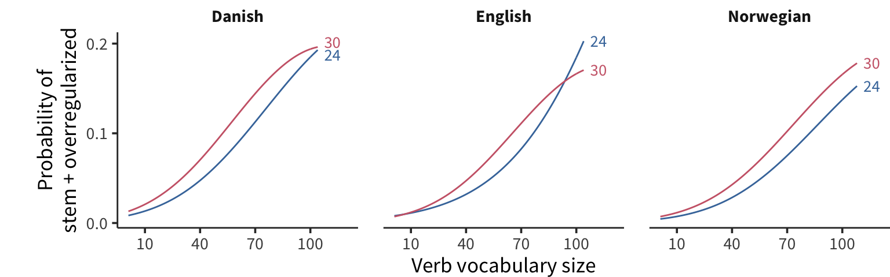
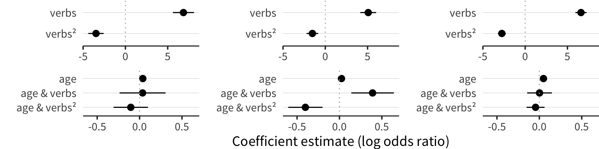
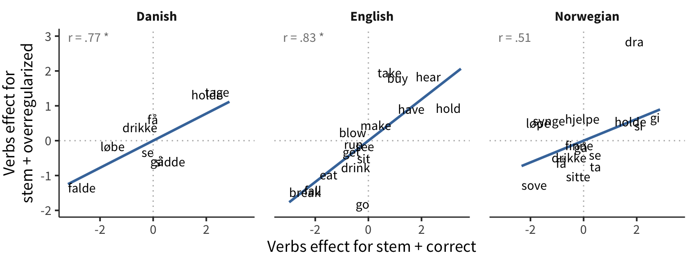

Characterizing the relationship between lexical and morphological development
Mika Braginsky1, Virginia A. Marchman2, Michael C. Frank2
1 Massachusetts Institute of Technology
2 Stanford University
Overview
Learning morphology requires generalizing without overgeneralizing
Empirical landscape of vocabulary ↔︎️ morphology ↔︎️ age
- Is morphology learning driven more by vocabulary or by age?
- How does morphology learning depend on vocabulary and age?
- How does morphology learning differ for different verbs?


CDI data for Danish, English, Norwegian:
- Stem + correct (says go and went)
- Stem + overregularized (says go and goed/wented)
- Number of verbs producing
- Age (16–36 months)
says ~ verbs + verbs² + age + age & verbs + age & verbs² + (verbs + age | item)
Vocabulary or age?
 
Vocabulary and age
Correct inflection (go + went)


Overregularization (go + goed/wented)


Individual verbs

Summary
- Irregular morphology learning relates strongly to vocabulary learning
- As vocabulary increases…
- it drives correct inflection more strongly
- it drives overregularization less strongly
- Older children…
- are more likely to produce correct forms and overregularize
- are less strongly driven to correct inflection by vocabulary size
- For verbs whose correct inflection is more influenced by vocabulary, their overregularization is also more influenced by vocabulary
- What properties of individual verbs influence their correct inflection and overregularization?
- Extension to more languages, more complex morphologies